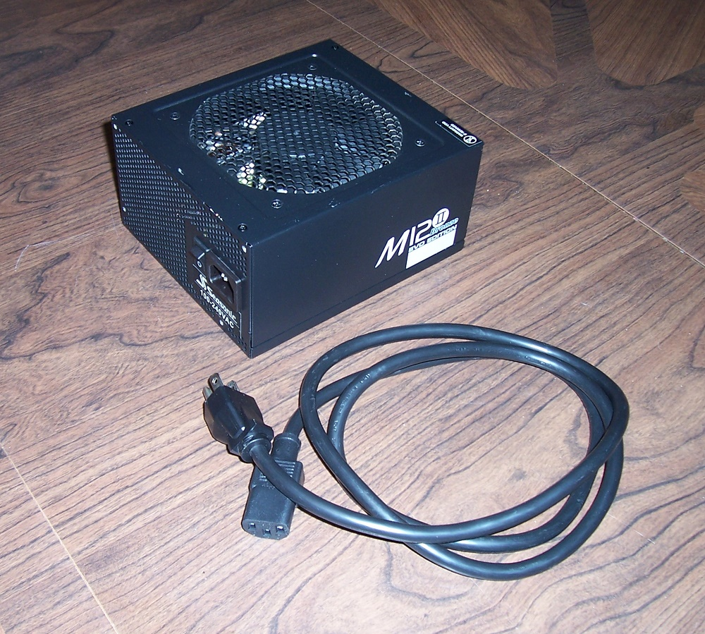
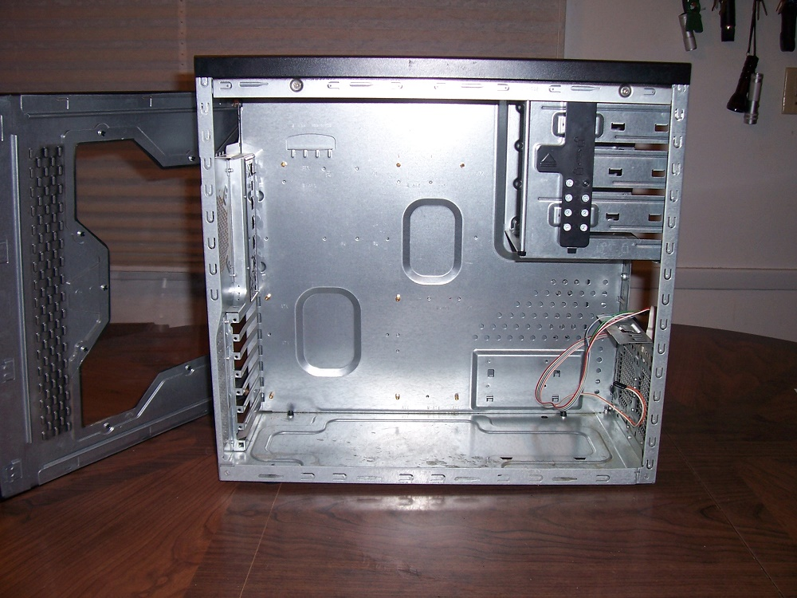
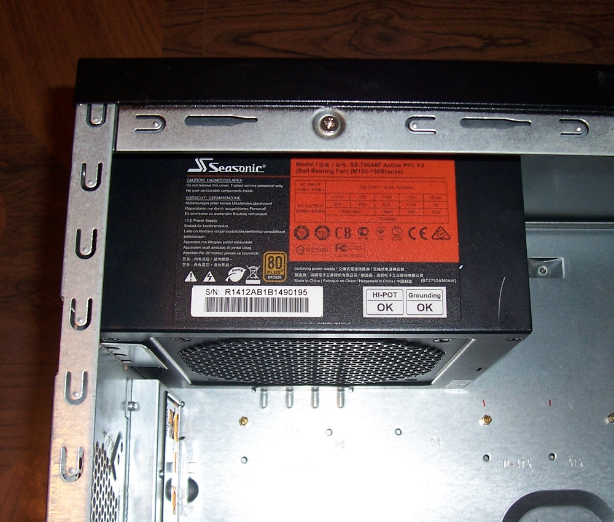

While not the most exciting part in your build, the power supply you choose will be perhaps the most important. The temptation for most first time PC builders is to get the cheapest power supply they can find, or use one that comes with whatever case they buy. This is a huge mistake. The power supply connects to all the more exciting components (CPU, motherboard, graphics card, etc.), so a failure in the power supply can destroy ever single component in your PC
Remember, if you're in doubt about which power supply you need, check an online guide like logical increments or use an online calculator like this one.
The power supply can usually only be installed before other components due to space constraints, so that's where we'll begin our build.

Here we can see a typical modular power supply like the one you're about to install. This particular unit is a Seasonic M12 Evo 750 watt unit. If you did your research, you already know this brand is very high quality and affordable, but any well made psu will work. As I said, this unit is modular. Modular in this context means that the jumble of wires you'd expect to be sticking out of the back of the power supply are separated from the main unit and can be plugged in as needed. This greatly reduces complexity and prevents clutter, easing installation. If your power supply isn't modular, don't worry, you'll just have a few extra wires and connectors you're not going to use. You can use zip ties to keep these out of the way if you wish, or your case might have its own cable management system.
Your power supply will come bundled with a power cord, which plugs into the back of the unit once its installed. If your unit is modular, you'll also get a full assortment of cables for the different components of your PC. Its unlikely you'll use all of these, or even most of them, so don't worry if you wind up with extra cables and plugs in the end, whether your psu is modular of not.

This is the case we'll be using. Just a basic mid-tower sized ATX case, nothing fancy. Something like this is very cheap and suits the purpose just fine, though you're of course free to use any case you want. Just make sure you mother board will fit!

The Power supply slides into the upper left corner on this case, though some cases will have a lower right position for the power supply. Since the power supply CAN be installed upside down, make sure the fan is not facing the metal case wall, as this will result in a quick death by overheating for your new psu, or at least frequent shut downs due to high heat.
It is secured with four small screws that screw in from the back of the case into the unit. Simple Stuff. We don't want to plug this baby in yet, or connect any of the cords if your psu is modular. That can wait.
If your power supply isn't modular, take the whole wad of cords now dangling around inside your case and hang them over the side of the case. This will get them out of the way for the rest of the process.
Now that our power supply is in, lets move on to the next step.
Homemade Logic
Matthew Buchanan